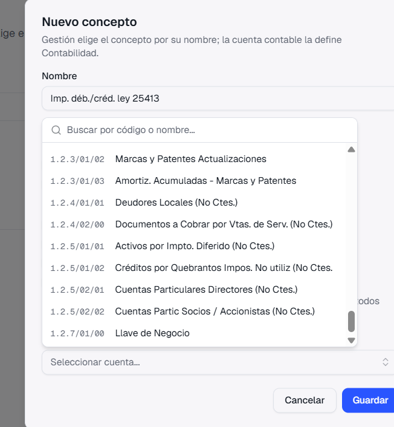
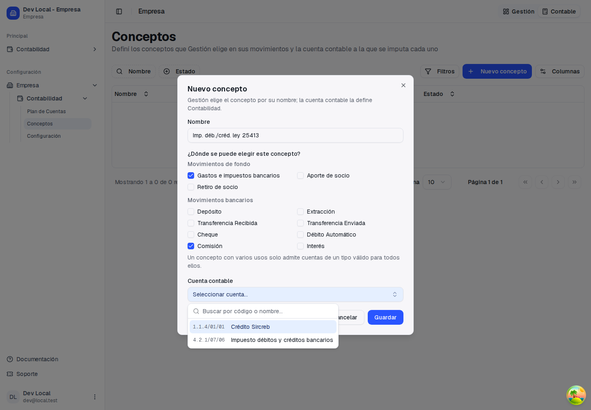

Guía de presentación: qué pasaba, qué cambió y cómo se usa
"Quería crear el concepto imp. deb/cred pero me trae solo el activo y no los gastos 4.2.1/07/06. Elegí tipo 'comisiones bancarias' que son gastos." Elizabeth Perez · Contabilidad → Conceptos → Nuevo concepto
Los usos de movimientos bancarios (Comisión, Débito Automático, Interés y los demás) solo aceptaban cuentas de Activo, Pasivo o Patrimonio Neto. Como el concepto tenía dos usos, «Gastos e impuestos bancarios» y «Comisión», el selector mostraba solo las cuentas que servían para los dos: las de Activo.
Una comisión o un débito bancario no podían imputarse a una cuenta de Gastos, aunque contablemente son gastos. La cuenta 4.2.1/07/06 no aparecía.
Comisión y Débito Automático aceptan además cuentas de Gastos, e Interés acepta Ingresos o Gastos, según se cobre o se pague.


| Uso | Cuentas que acepta |
|---|---|
| Gastos e impuestos bancarios | Gastos o Activo (sin cambios) |
| Comisión, Débito Automático | Activo, Pasivo, Patrimonio Neto y, ahora, Gastos |
| Interés | Activo, Pasivo, Patrimonio Neto y, ahora, Ingresos o Gastos |
| Depósito, Extracción, Transferencias, Cheque | Activo, Pasivo o Patrimonio Neto (sin cambios) |
Si el concepto tiene varios usos, el selector muestra las cuentas que sirven para todos a la vez.